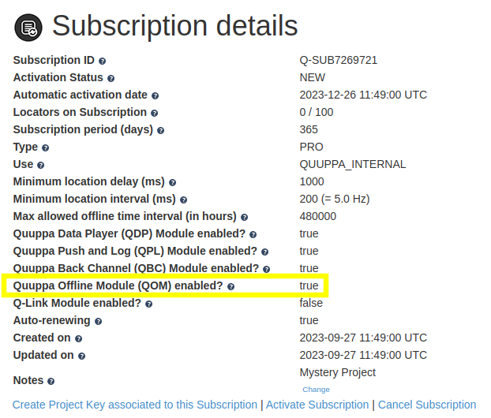
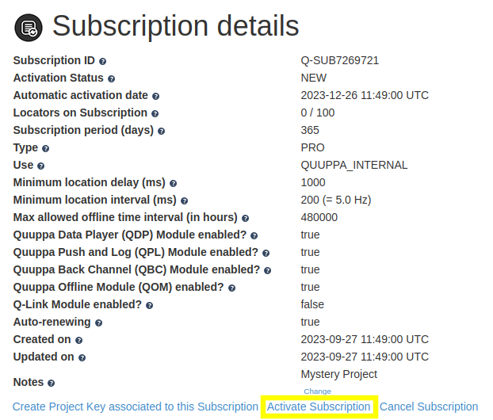

Use the Offline Module for Generation Q Locators
The Offline Module is an optional module for Generation Q Locator subscriptions, which allows the Quuppa Positioning Engine (QPE) to run a project completely offline. The feature has been developed for situations where the Quuppa system cannot be connected to a network (e.g. for security reasons or in cases where the internet connection on site is unstable). To use the Offline Module for Generation Q Locators, you will need to have Generation Q Locators (i.e. Q17 or Q35) as well as the QPE release v7.0 or later.
When the Offline Module is enabled, the QPE will continue to run even if the Quuppa Customer Portal (QCP) has not established a connection with the QPE to perform a file sync for over 48 hours. The module also makes it possible to store the project file locally without submitting it to the QCP. However, please note that this will limit Quuppa’s ability to help you troubleshoot the project in the future.
Start implementing your offline project by following the steps below:
- Physically install and deploy the system. For more information about deploying your Quuppa system, please see our Quuppa Development Kit Quick Start Guide.
- Create a quuppaprojectoverride folder in the QPE's project folder (defined in the QPE startup configuration as -Dproject.folder), for example /opt/quuppa/PE/quuppaprojectoverride. Make sure you set proper owner and access rights for the new folder (same as the QPE project folder has).
-
Save the QSP project file, which now includes the IDs of all the Locators
physically installed at the site, to the newly created
quuppaprojectoverride folder.
Note: You can check the QPE’s project folder from the Working Directory row in the QPE Web Console. Please note that only one .quuppaproject file can be stored in this folder at a time.Warning: Please remember that you are responsible for backing up the project files and ensuring that you are always using the latest version of the file.
- (Re)start Tomcat. Wait until all Locators are connected to QPE.
- QPE will create a <your project key>.qam file in the QPE project folder. Copy this file to, for example, a USB memory stick. You will have to later upload this file to Quuppa Customer Portal.
- Log in to the QCP.
- Open the Subscriptions list from the main Dashboard.
- Select the relevant subscription by clicking on the subscription ID. This will open the Subscription Details page.
-
Check that the Offline Module has been enabled.

Note: Locators under different subscriptions can be used together in the same offline project as long as all of the subscriptions have the Offline Module enabled. Please check the Subscription details page for each subscription that you want to use in this project. -
Check that the subscription has been activated. If not, activate it by clicking
the Activate Subscription button.

-
Generate a project key by clicking the Create Project Key associated
to this Subscription button.
The Project Key details page will open.
-
Click the Upload locator authentication info for offline
use.
-
Click Choose File and select the <your
project key>.qam file that you copied from the QPE project folder
earlier. Click Upload to upload the file.
Warning: You have to upload the .qam file to the QCP every time you add new Locators to the project and connect them to the QPE.
-
You can now see authenticated Locators added to the project key.
Note: If the Locators have not previously been associated with a subscription in the QCP, adding them to the project key will automatically associate them to the subscription linked to this project key.
- Once the Locators are added to the project key and the subscription is activated, you can download the license file, license signature and the sync file from QCP by clicking the Download files for QPE v8.5+ button on the Project Key Details page. If you have submitted the latest project file to the QCP, the downloaded files will also include the project file and the project signature.
- Unzip the downloaded files and transfer them to the offline QPE's project folder (defined in the QPE configuration as -Dproject.folder) e.g. using a memory stick.
- Add -DdoNotConnectToQCP parameter to your Java start-up paremeters. Please refer to the Java Virtual Machine Startup Parameters section for more about the available optional start-up parameters.
-
Start Tomcat. Check in the QPE Web Console that QPE is running in tracking mode
and Project Sync Status is Disabled. You are now running
the project offline.